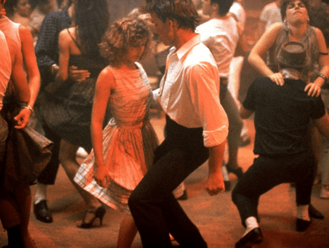
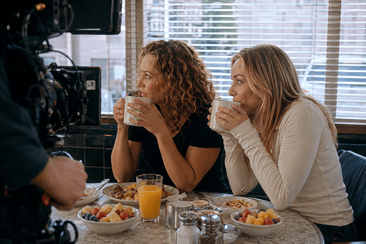
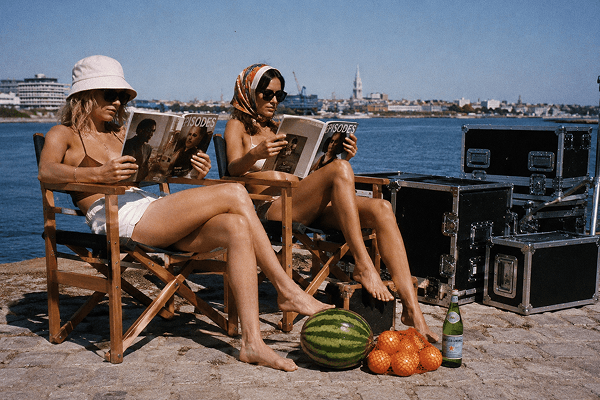
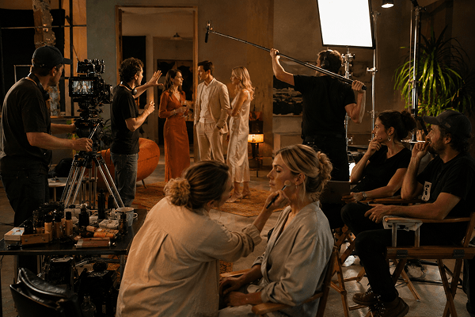

01 / ідея
episodes — це серіал, а не разова вечірка.
Кожен епізод – окремий вікенд зі своїм фільмом-натхненням, жанром і настроєм. Ти приїжджаєш прожити кілька днів усередині історії: новий світ, своя роль, перетворення — і фінальна сцена, заради якої й існує весь фільм.
Поряд із тобою – режисер, знімальна група і команда, яка піклується про тебе від першої хвилини до титрів. У фіналі – маленька прем'єра великого фільму, де головна роль твоя. Не кілька гарних кадрів на згадку, а історія, яку ти проживаєш по-справжньому.
А коли епізод закінчується, історія – ні: поряд лишаються люди, з якими ти все це прожила, і попереду вже чекає наступна серія.
У головній ролі — ти.
02 / найближчі епізоди
Обери сцену, у якій хочеться бути.

за мотивами х/ф «Брудні танці»


за мотивами серіалу «Секс і місто»
03 / як це працює
Як можна прожити епізод

Кіновікенд
Вихідні усередині фільму або серіалу просто у твоєму місті: з режисером, знімальною групою і командою, що піклується про тебе від зустрічі до титрів. Своя роль, своє перевтілення — і маленька прем'єра, де головна роль твоя. Обрати вікенд
Кінотур
Епізод, що перетворюється на подорож. Ти їдеш у країну, де жили герої фільму, щоб прожити історію там, де вона й могла статися. Нові міста, довша дорога й набагато більше світу в кадрі. Хочу в тур
Кіно під ключ — для брендів і команд
Особливий епізод, що зближує команду й працює на імідж бізнесу. Партнер може стати частиною історії або відправити «на зйомки» клієнтів, інфлюенсерів чи команду. Для партнерів04 / фінальна сцена
Напиши нам
Маєш питання, хочеш стати героїнею наступного епізоду або партнером? Ми на зв'язку.